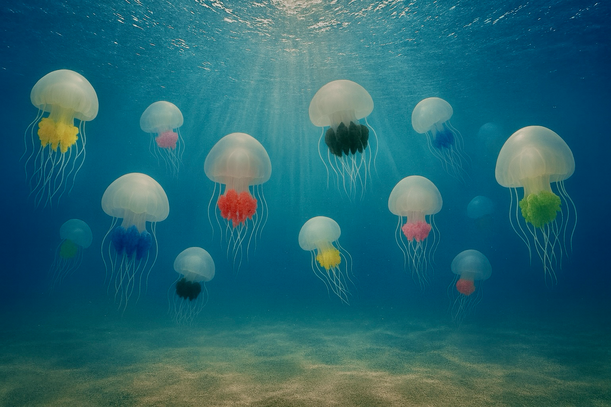
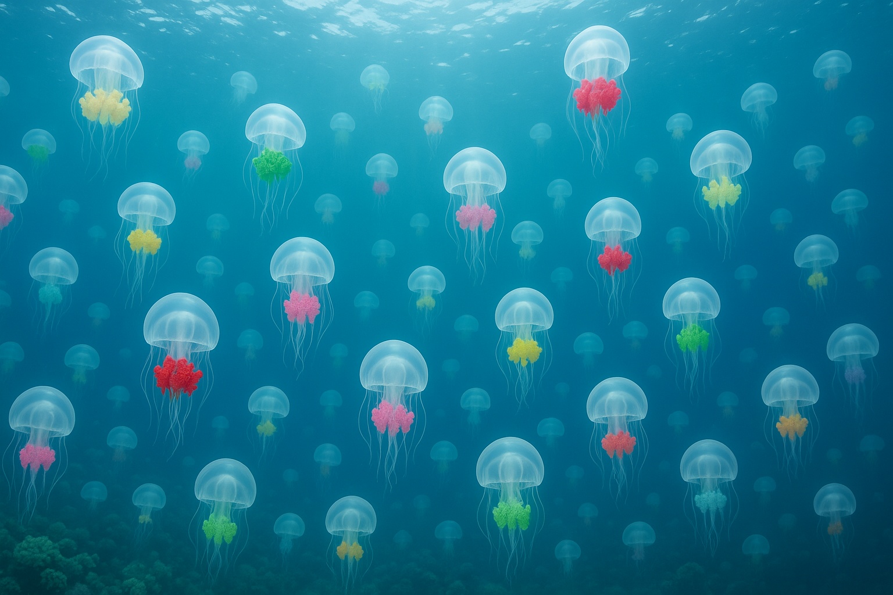
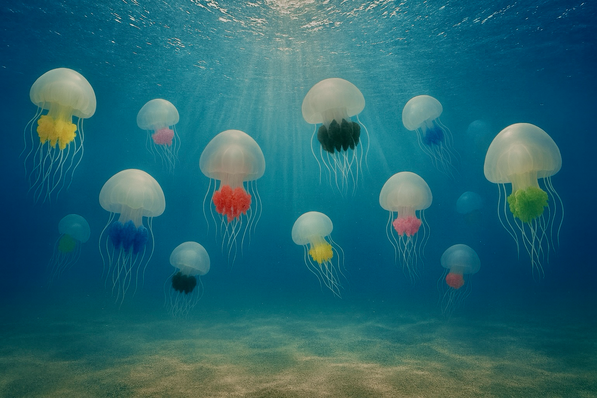
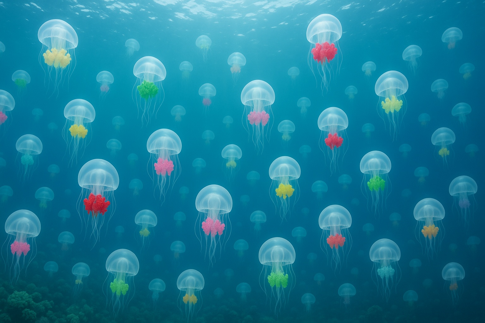
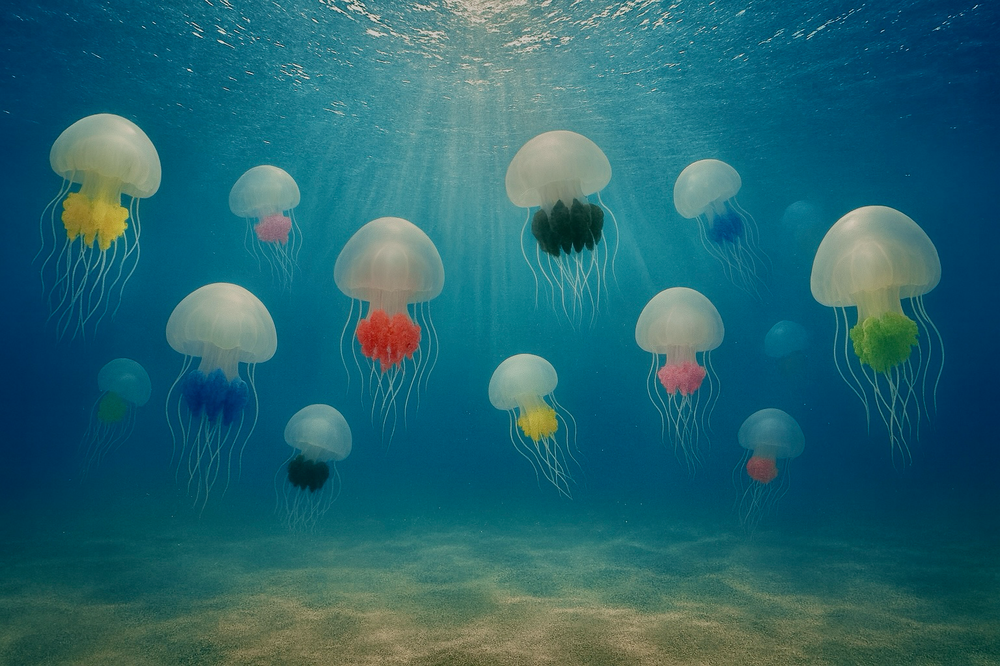
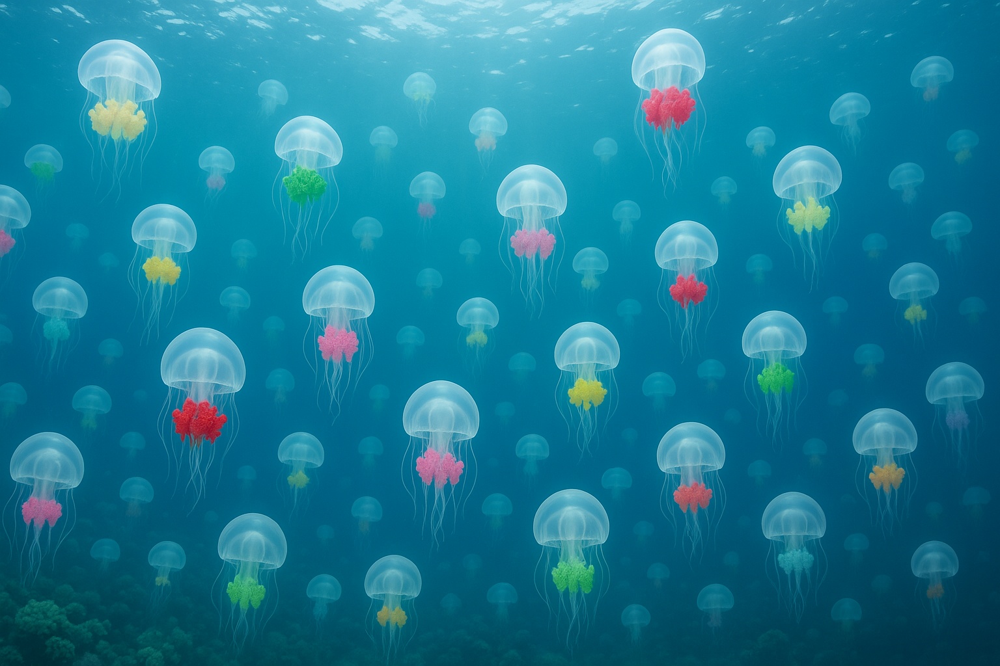

グラフィックデザイン
 




海や自然をテーマにしたグラフィックデザイン作品。
Enchanting ocean-inspired design
架空デザイン制作例。いつか商品化できたらいいなというイメージ。


海や自然をテーマにしたグラフィックデザイン作品。
ロゴ LP バナー UIデザイン制作
猪をイメージした、上品さと力強さのあるロゴ。
神秘性を表現したモノクロのエンブレムロゴ。
自然の力で未来を育むをテーマにしたロゴ。
法律事務所の気品とカジュアルさを意識したロゴデザイン。
学び合い未来が育つコミュニティがテーマのロゴ。
持続可能なセキュリティをイメージしたITサービスのロゴ。
小児科のやさしいイメージを意識したロゴ。
バンドのワンマンライブ用に制作したフライヤーデザイン。